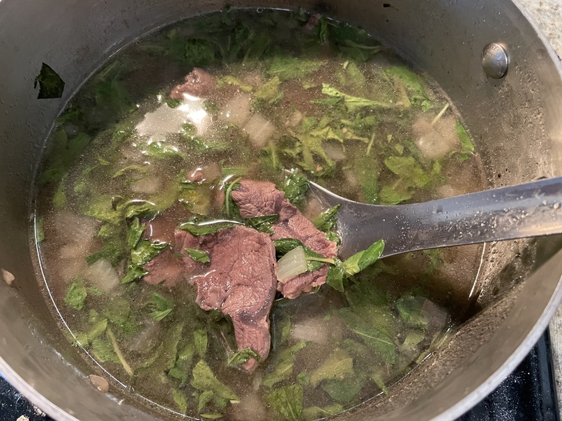

| Other | Meat | Veggie | Fruit |
|---|---|---|---|
| chicken broth | beef shank | onion | |
| pepper | rau ram | ||
| salt | shallot | ||
| wonton soup base |
| instructions |
|---|
| Slice shanks and season with salt and pepper |
| Golden shallots and onions |
| Sear meat |
| Add water and adjust to taste with various seasonings |
| Simmer until cooked |
| Add chopped raw ram in last few minutes |